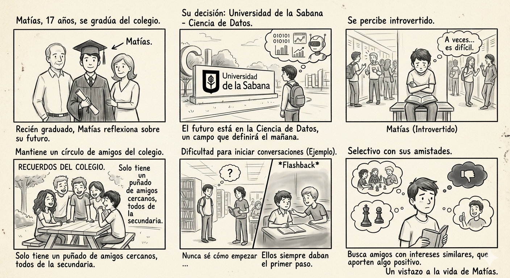
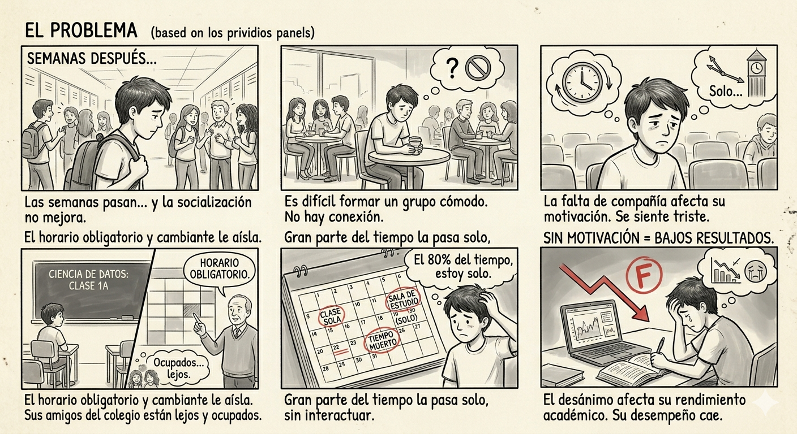
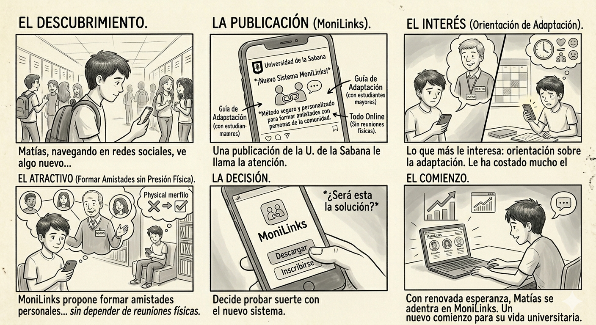
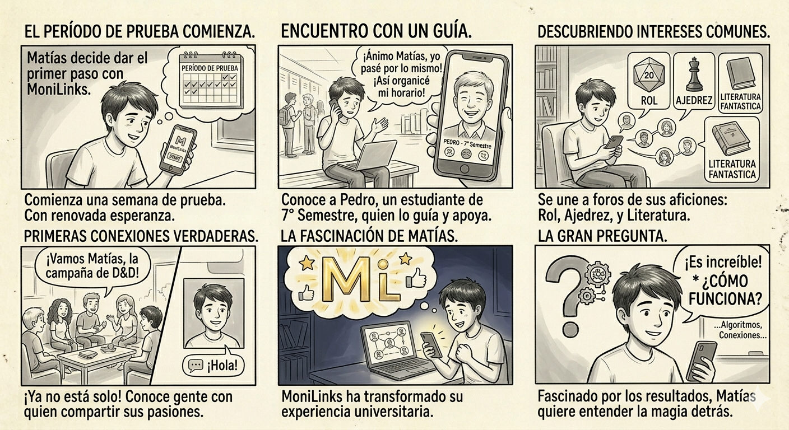
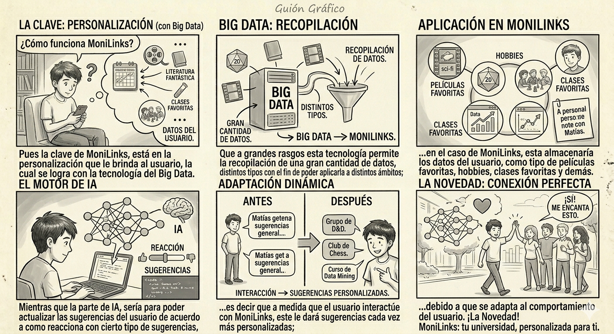
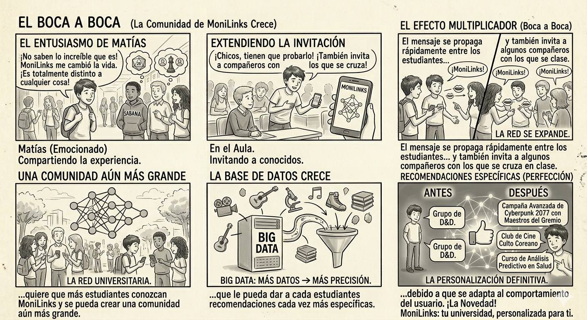
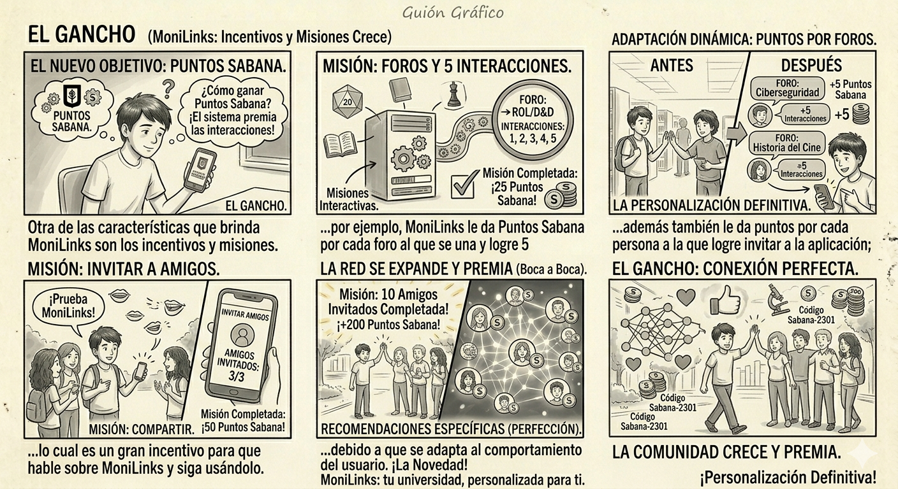
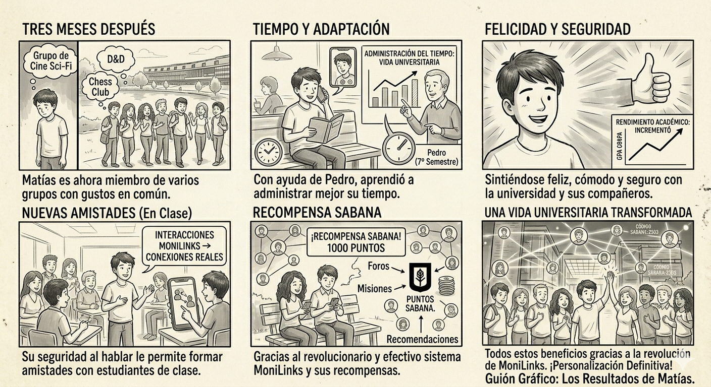

Escena 1

Matías Alonso Caicedo Fernández es un joven de 17 años que recién se graduó del colegio y decide entrar a la Universidad de la Sabana para estudiar la carrera de Ciencia de Datos, puesto que lo considera como algo que va a definir el future. Matías se percibe a sí mismo como una persona introvertida, pues se le dificulta el generar nuevas amistades. Esto se ejemplifica muy bien con sus amigos, ya que a todos ellos los conoció en el colegio, de una forma dónde siempre eran los demás quiénes empezaban las conversaciones, por lo cual a Matías no está acostumbrado a empezar una conversación y de ahí poder formar una amistad. Esta dificultad se incrementa teniendo en cuenta que Matías es una persona muy selective con sus amistades, puesto que busca a personas con las cuales comparta varias aficiones en común y que le aporten de manera positive en su vida.
Escena 2

Ya pasadas unas semanas en la universidad, Matías presenta varios problemas con respecto a la socialización, pues es algo que se le dificulta y por lo tanto le ha impedido la formación de un grupo de amigos con el cuál se sienta cómodo. Esta situación empieza a afectar a Matías a nivel emocional, pues este se siente triste y sin motivación de ir a la universidad, ya que no tiene con quien hablar y el relacionarse con sus amigos le es difícil, ya que debido al horario que le dio la universidad, Matías se ve obligado a estar gran parte del tiempo en la universidad lo que le dificulta poder interactuar con sus amigos, además de que cada uno de ellos está ocupado con sus asuntos; además no es tan simple como que se hable con las personas con las que se cruza en las clases, ya que muchas veces no comparte clase con las mismas personas. Esta situación escala a un punto en el que su desempeño académico se ve perjudicado debido a la desmotivación generada por la falta de un grupo de amigos.
Escena 3

Un día Matías estaba en una red social, cuando ve una publicación de La Universidad de la Sabana, que promociona un sistema de foros y una aplicación llamado MoniLinks, el cual llama la atención de Matías, puesto que se promociona como un método seguro y personalizado de formar amistades con personas de la comunidad. Además otra cosa que le interesa a Matías es lo que propone este nuevo sistema, ya que no es solo un sistema que le ayuda a formar amistades de una forma personal, sino que también le brinda orientación sobre la adaptación a la vida universitaria por medio de un estudiante de semestres más altos; lo que le sirve mucho a Matías, puesto que se le ha resultado difícil adaptarse al horario que le brindo la universidad y poder equilibrar su vida. Además, todo esto que propone MoniLinks lo puede hacer sin depender de reuniones físicas, lo que le sirve mucho por su complicado horario que se le fue brindado.
Escena 4

Matías motivado decide probar MoniLinks por un período de tiempo para ver que le parece y si le ayuda, es en este lapso que Matías disfruta de todos los beneficios que le brinda MoniLinks, pues conoce a un estudiante de séptimo semestre, el cual tuvo un inicio parecido al de Matías, por lo que le ayuda de gran manera. Además, se une a varios foros de temas sobre cosas que le interesan, lo cual le ayuda a conocer personas con las cuales se siente cómodo de hablar sobre cosas que le gustan y siente que puede formar un grupo de amigos con estas personas. Es en este período de prueba que Matías queda fascinado con el sistema MoniLinks, por lo que se hace una pregunta: ¿Cómo funciona?
Escena 5
Pues la clave de MoniLinks, está en la personalización que le brinda al usuario, la cual se logra con la tecnología del Big Data. Que a grandes rasgos esta tecnología permite la recopilación de una gran cantidad de datos, de distintos tipos con el fin de poder aplicarla a distintos ámbitos; en el caso de MoniLinks, esta almacenaría los datos del usuario, como tipo de películas favoritas, hobbies, clases favoritas y demás. Mientras que la parte de IA, sería para poder actualizar las sugerencias del usuario de acuerdo a como reacciona con cierto tipo de sugerencias, es decir que a medida que el usuario interactúe con MoniLinks, este le dará sugerencias cada vez más personalizadas; debido a que se adapta al comportamiento del usuario.

Escena 6

Matías emocionado con la ayuda que le ha dado MoniLinks, decide comentarle a sus compañeros y conocidos que quieran entrar a La Universidad de la Sabana, pues les dice que MoniLinks es una forma increíble de hacer amigos, distinta a cualquiera que se haya visto antes; además también invita a algunos compañeros con los cuales se cruza en clase, pues quiere que más estudiantes conozcan MoniLinks y se pueda crear una comunidad aún más grande, que le pueda dar a cada estudiantes recomendaciones cada vez más específicas.
Escena 7

Otra de las características que brinda MoniLinks son los incentivos y misiones, los cuales le brindan Puntos Sabana al usuario entre más interacciones tenga con el sistema y los usuarios que estén dentro; por ejemplo, MoniLinks le da Puntos Sabana por cada foro al que se una y logre 5 interacciones con el mismo usuario; además también le da puntos por cada persona a la que logre invitar a la aplicación; lo cual es un gran incentivo para que hable sobre MoniLinks y siga usándolo.
Escena 8

Ya han pasado tres meses desde que Matías empezó a usar MoniLinks y los resultados son más que notables, ahora él tiene varios grupos a los que pertenece, en los cuales tiene gusto en común con varias personas; también, ahora él sabe como administrar de mejor forma su tiempo, esto con la ayuda del estudiante de séptimo semestre que escogió y que le fue orientando en este proceso de adaptarse a la vida universitaria. Además los resultados no solo son en el aspecto social, puesto que ahora se siente mucho más feliz y cómodo con la universidad, lo que se refleja en su desempeño académico que ha incrementado y no solo es eso, pues gracias a las distintas interacciones que tuvo en MoniLinks, ahora Matías se siente más seguro al momento de hablar con las demás personas, lo que le ha permitido poder formar amistades con los estudiantes con los cuales se cruza en las distintas clase. Todos estos beneficios llegaron gracias a lo revolucionario y efectivo del sistema MoniLinks.